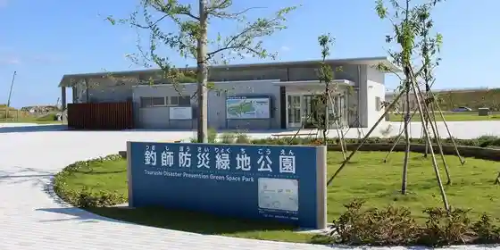
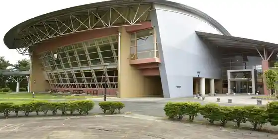

Shinchi Garland Maru no Niwa
Shinchi, Fukushima · 090-4476-7352 · Official / source link
Shinchi Panputorakku
Shinchi, Fukushima · 0244-32-1520 · Official / source link
Tsurishi Bosai Green Park
Shinchi, Fukushima · 0244-62-2730 · Official / source link

Shinchi Umizuri Ri Park
Shinchi, Fukushima · 0244-62-5559 · Official / source link
Shinchi General Park
Shinchi, Fukushima · 0244-63-2200 · Official / source link

Soma Chiikikaihatsu Kinen Ryokuchi
Shinchi, Fukushima · 0244-62-2113 · Official / source link
Wakuwaku Land
Shinchi, Fukushima · 0244-62-4722 · Official / source link
Yaku Kusa Forest Shinchi Park Gorufu Ba
Shinchi, Fukushima · 0244-62-5630 · Official / source link
Shinchi Jiba San Market
Shinchi, Fukushima · 0244-62-5220 · Official / source link
Fukuda Suwa Shrine
Shinchi, Fukushima · 0244-62-2371 · Official / source link
Kurumegasuri no Ie
Shinchi, Fukushima · 0244-62-4477 · Official / source link
Komagamine Castle Ruins
Shinchi, Fukushima · 0244-62-4477 · Official / source link
Mayumi Shimizu
Shinchi, Fukushima · 0244-62-2112 · Official / source link
Ippai Shimizu
Shinchi, Fukushima · 0244-62-2112 · Official / source link
Shirahata no Icho
Shinchi, Fukushima · 0244-62-2112 · Official / source link
Shinchi Castle Ruins
Shinchi, Fukushima · 0244-62-2112 · Official / source link
Ukon Shimizu
Shinchi, Fukushima · 0244-26-3720 · Official / source link
Anko Jizo
Shinchi, Fukushima · 0244-62-2112 · Official / source link
Shika Okamiyama
Shinchi, Fukushima · 0244-26-3720 · Official / source link
Shinchi Kaizuka Fu Tenaga Myojin Sha Ato
Shinchi, Fukushima · 0244-62-4477 · Official / source link
Shika Okami Baths
Shinchi, Fukushima · 0244-63-2617 · Official / source link
San Kan Jigai Tsuka
Shinchi, Fukushima · 0244-62-4477 · Official / source link
Kan Kaido Park
Shinchi, Fukushima · 0244-62-4477 · Official / source link
Oku no So Zen Miya Ko Mayu Mine Shrine
Shinchi, Fukushima · 0244-62-3646 · Official / source link